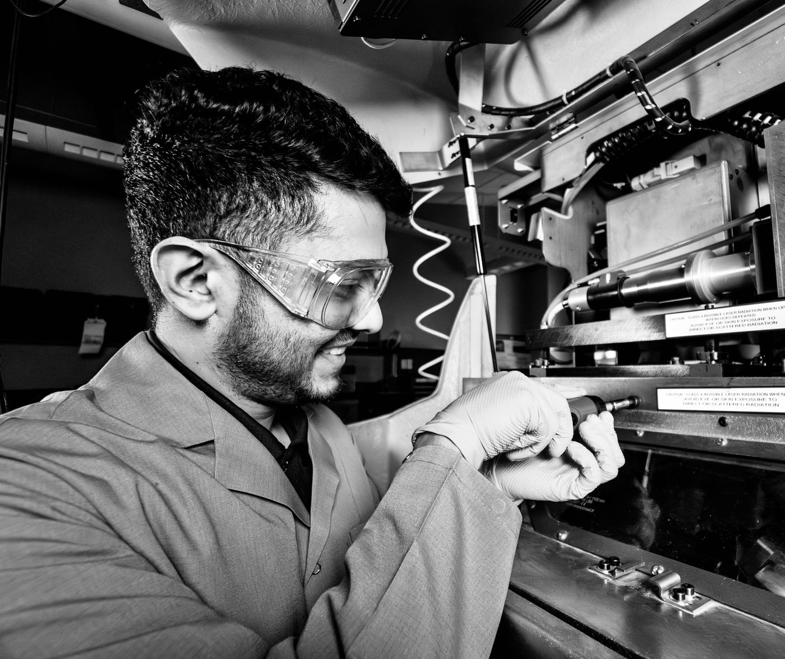

About
Mechanical engineer by training, now printing shape memory alloys at Texas A&M.
Shape memory alloys are the rare material that does something. Heat a NiTi part past its transformation temperature and it pulls itself back to a shape it was taught months earlier, with no motor, no linkage and no gearbox. Nitinol is why most implantable devices work the way they do. It's also unusually unforgiving to print, because the same laser that builds the part rewrites the thermal history that decides how it transforms.
That's where my work sits. I run laser powder bed fusion of NiTi and NiTiHf at Texas A&M, in Dr. Alaa Elwany's group in Industrial and Systems Engineering, building process windows that hold rather than ones that worked once on a Tuesday. The parameter space is too large to brute force, so a good part of the job is statistical: designed experiments up front, in-situ monitoring during the build, and Python for the analysis afterwards.
The other half is proving what came out. At Oak Ridge that meant EBSD and in-situ synchrotron XRD, tying process-controlled microstructure to where strain actually localises. For engineered structures I pair DIC with FEA, to see whether a part deforms the way the model promised. Thermomechanical and multi-cycle fatigue testing then shows whether it survives being used.
Before the Ph.D. I trained as a mechanical engineer: a B.Tech. at SRM, an M.Engg. at Thapar, then a year at Siemens on piping design for a gas plant in Berlin. That order still shapes how I work. The metallurgy is in service of a part that has to function, on a machine someone has to run, to a standard someone has to sign off.
Most recently I spent the first half of 2026 at EOS of North America in Metals R&D, leading experimental design on superelastic NiTi for production-ready parts across three America Makes and LIFT programmes. I finish the Ph.D. in December 2026.
Away from the machine: hiking, running, strength training, a guitar I'm still arguing with, and a reading list that outpaces me.

Recognition
- 2nd place, ASTM AM Student Poster Competition. ISO/ASTM TC261-F42 joint meeting, March 2025, from more than 20 entries.
- NSF INTERN Fellowship. Oak Ridge National Laboratory, summer 2024.
- Academic distinction. Top 5% of class, M.Engg., Thapar Institute, 2020.